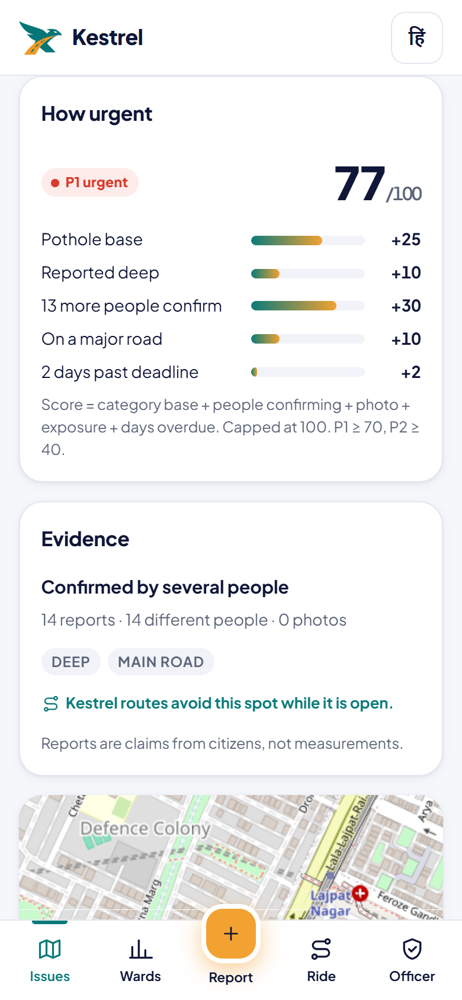
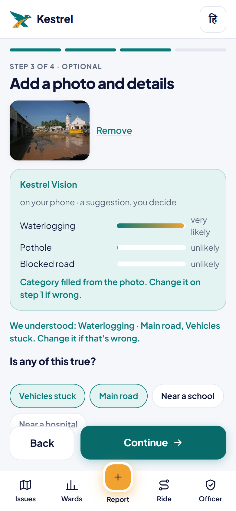
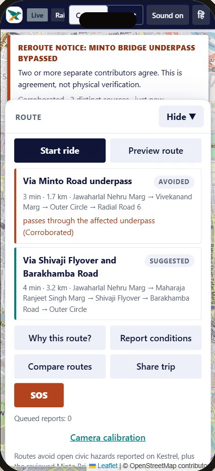
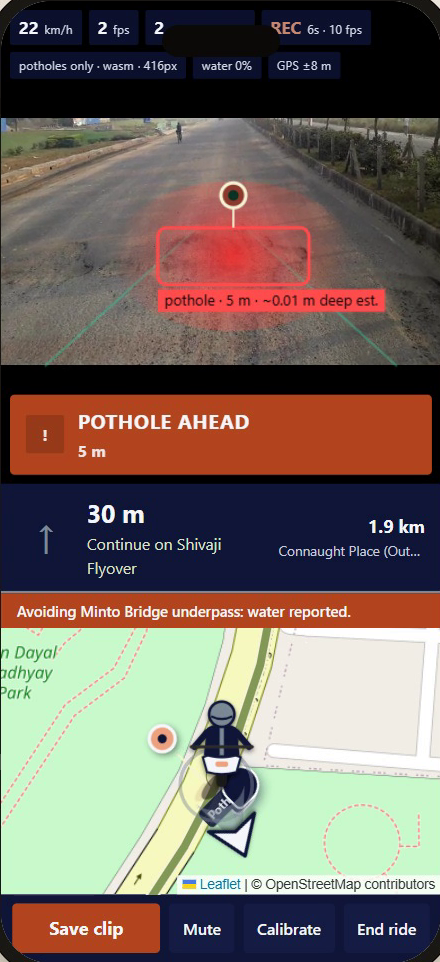
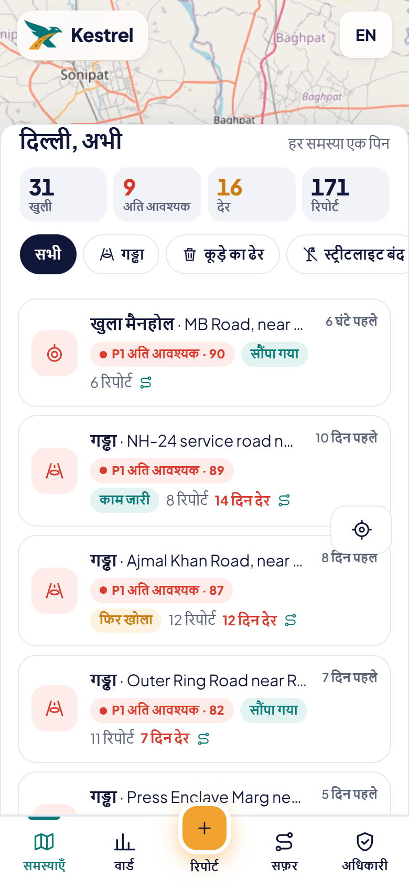

“Someone must have complained by now…”
01The real problem

Still there.
02Who it hurts
Never knows if anyone is even listening.
Drowning in duplicate tickets, with no clear priority.
No honest picture of what actually gets fixed.
03Duplicates, fused
04Priority anyone can read

05Accountability
Every step lands on a public timeline.

06Kestrel Vision · our own AI model
07Ride mode · hazard-aware routing
2 riders
report water at the underpass
Every route
is tested against the hazard area
Detour
validated, with the reason shown


08Ride mode · the phone as a co-pilot
YOLOv8n
Tracked across frames, depth estimated from road geometry.
SegFormer
Two of three checks must agree before it warns.

09Built for Bharat
Every screen in both. Hinglish understood.
Speak instead of typing.
Sends itself later, exactly once.
A light web app. No install needed.
Rally neighbours to confirm.
Routes avoid flooded underpasses.
10Under the hood
TypeScript PWA · Leaflet map
Kestrel Vision on ONNX Runtime Web
IndexedDB outbox
Pure Python domain core
fusion · severity · lifecycle
behind API Gateway
TransactWriteItems
revision-guarded, idempotent writes
11Path to adoption
Officer console and public pages from day one.
Kestrel adds fusion, priority and proof of fix.
Good work becomes visible, ward by ward.
Report once. Track in public.
Ride safer. Closed only when it's really fixed.
github.com/4-thkind/Kestrel